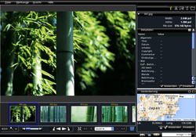
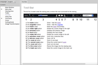
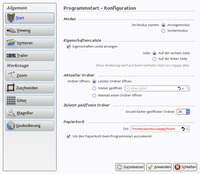

Oqapy
Dieser Artikel wurde für die folgenden Ubuntu-Versionen getestet:
Ubuntu 16.04 Xenial Xerus
Ubuntu 14.04 Trusty Tahr
Zum Verständnis dieses Artikels sind folgende Seiten hilfreich:
Oqapy  ist mit dem Ziel entstanden, digitale Fotos bequem grafisch sortieren und verwalten zu können. Vom Funktionsumfang ist es zwischen einfachen Bildbetrachtern und ausgewachsenen Bildverwaltungen anzusiedeln. Autor des Programms ist Vincent Vande Vyvre, der auch Qarte entwickelt hat.
ist mit dem Ziel entstanden, digitale Fotos bequem grafisch sortieren und verwalten zu können. Vom Funktionsumfang ist es zwischen einfachen Bildbetrachtern und ausgewachsenen Bildverwaltungen anzusiedeln. Autor des Programms ist Vincent Vande Vyvre, der auch Qarte entwickelt hat.
Funktionen:
Bildbetrachter mit Vollbildanzeige
Direktimport von digitalen Kameras
Suchen und Sortieren von Fotos nach Name, Datum, Größe, Metadaten etc.
Metadaten-Verwaltung inkl. Geokodierung
Bildbearbeitungsfunktionen
Export in verschiedenen Formaten
Entwickelt wurde das Programm mit Python. Bei der Programmoberfläche kommt Qt zum Einsatz, während Exiv2 für die Bearbeitung der Metadaten zuständig ist. Um die Kamera-Einbindung kümmert sich gphoto2. Die Programmoberfläche ist in Englisch oder Französisch. Eine deutsche Übersetzung ist in Arbeit. Wer diese vervollständigen möchte, kann dies direkt im Browser über Launchpad machen.
Installation¶
 Das Programm ist nicht in den offiziellen Paketquellen enthalten. Zur Installation muss man daher auf das "Personal Package Archiv" (PPA) [2] des Entwicklers ausweichen.
Das Programm ist nicht in den offiziellen Paketquellen enthalten. Zur Installation muss man daher auf das "Personal Package Archiv" (PPA) [2] des Entwicklers ausweichen.
PPA¶
Adresszeile zum Hinzufügen des PPAs:
ppa:vincent-vandevyvre/vvv
Hinweis!
Zusätzliche Fremdquellen können das System gefährden.
Ein PPA unterstützt nicht zwangsläufig alle Ubuntu-Versionen. Weitere Informationen sind der  PPA-Beschreibung des Eigentümers/Teams vincent-vandevyvre zu entnehmen.
PPA-Beschreibung des Eigentümers/Teams vincent-vandevyvre zu entnehmen.
Damit Pakete aus dem PPA genutzt werden können, müssen die Paketquellen neu eingelesen werden.
Nach dem Aktualisieren der Paketquellen kann das folgende Paket installiert werden:
oqapy (ppa)
 mit apturl
mit apturl
Paketliste zum Kopieren:
sudo apt-get install oqapy
sudo aptitude install oqapy
Verwendung¶
|  |
| Hauptfenster |
Bei Ubuntu-Varianten mit einem Anwendungsmenü erfolgt der Start [3] über den Menü-Eintrag "Grafik -> Oqapy".
Das Programmfenster lässt sich grob in drei Teile gliedern. Die Vorschau des ausgewählten Bilds nimmt links oben den größten Platz ein. Darunter befindet sich eine (ausblendbare) Navigationszeile (Trailer) mit im selben Ordner vorhandenen Bildern. Am rechten Fensterrand ist das Eigenschaften-Fenster verankert, das neben Basisinformationen über Registerkarten (Tabs) Zugriff auf die folgenden Funktionen bietet:
Bildgröße (Aus- bzw. Zuschnitt)
Farben (Histogramm)
Umwandlung in Graustufen
Export
|  |
| Dokumentation |
Prinzipiell kann das Programm in drei Modi arbeiten, zwischen denen unten rechts umgeschaltet werden kann:
Anzeigemodus
Sortiermodus
Vollbildmodus
Die integrierte Programmdokumentation, zu erreichen über "Hilfe -> Dokumentation", hilft bei der Einarbeitung in die verschiedenen Programmelemente weiter. Derzeit liegt diese allerdings nur in Englisch und Französisch vor.
Metadaten¶
Eine der Kernfunktionen einer Bildverwaltung ist das Anzeigen und Bearbeiten der Metadaten. Oqapy unterstützt dabei die Formate Exif (nur Lesen) und IPTC (Lesen und Schreiben). XMP wird nicht unterstützt.
Unterhalb der Metadaten befindet sich die Geokodierungsfunktionen zur Anzeige bzw. zum Setzen des Aufnahmeorts. Zur Auswahl stehen Karten von OpenStreetMap und Google Maps. Eine Zoom-Funktion ist zwar nur bei Google Maps vorhanden, diese wirkt sich aber auch auf die OSM-Ansicht aus. Oqapy kann auch mit GPX-Tracks umgehen.
Bildgröße (Aus- bzw. Zuschnitt)¶
Diese Registerkarte kombiniert klassische Vergrößerungs- bzw. Verkleinerungsfunktionen mit einem Beschneidewerkzeug für Bildausschnitte. Auch das stufenlose Rotieren von Bildern ist an dieser Stelle untergebracht.
Farben (Histogramm)¶
Das Histogramm bietet einen Überblick über die Farb- und Helligkeitsverteilung eines Bilds. Farben können an dieser Stelle nicht angepasst werden, aber der Kontrast inkl. einer Kontrastspreizung. Zusätzlich steht eine Funktion zur Verfügung, die beim Entrauschen von Bildern hilft.
Umwandlung in Graustufen¶
Liebhaber von Schwarz-Weiß-Fotos können an dieser Stelle Farbbilder entfärben und auf Wunsch mit einer Tönung versehen. Zur Auswahl stehen Sepia oder Blau.
Export¶
Zur Konvertierung von (bearbeiteten) Bildern dient die Export-Funktion. Dazu zählen im weitesten Sinne auch die Druckausgabe und die Erstellung von PDF-Dateien. Allerdings sind letztere Funktionen im Menüpunkt "Datei -> Drucken" untergebracht.
Weitere Funktionen¶
Bildersuche¶
Über "Werkzeuge -> Bildersuche" besteht die Möglichkeit, eine Bildersammlung nach verschiedenen Kriterien zu durchsuchen. Dazu zählen neben Datum und Dateigröße auch bestimmte Metadaten wie Titel, Autor sowie Schlagwörter und Geokoordinaten.
GPX-Tracks¶
Über "Werkzeuge -> Geokodierung" kann ein aufgezeichneter GPS-Track als Datei ausgewählt werden. So können Bildern anhand ihres Zeitstempels Geokoordinaten zugewiesen werden. Praktisch, wenn die Kamera keinen eigenen GPS-Empfänger enthält und stattdessen eine GPS-Maus verwendet wurde.
Lupe¶
Ein in manchen Situationen sehr nützliches Hilfsmittel befindet sich unter "Werkzeuge -> Lupe". Dabei kann nicht nur der Vergrößerungsfaktor (Zoom) angepasst werden, sondern auch die Form und die Größe der Lupe.
Raster¶
Unterlegt das Bild mit einem Raster. Die Größe und die Darstellungsart können in den Einstellungen unter dem Punkt "Gitter" angepasst werden.
Bildausschnitte¶
Mit dem "Crop tool" können Bildausschnitte angefertigt werden.
Einstellungen¶
|  |
| Einstellungen |
Über "Datei -> Einstellungen" öffnet sich ein Dialogfenster, das in die beiden Hauptpunkte "Allgemein" und "Werkzeuge" unterteilt ist. Relevant für das Arbeiten mit Oqapy ist keine der Einstellungsmöglichkeiten, aber so kann man das Programm bequem an die eigenen Vorlieben anpassen, z.B. ob die Geokodierung bevorzugt mit OpenStreetMap oder Google Maps stattfinden soll oder um das Eigenschaften-Fenster von rechten an den linken Fensterrand zu verlagern.
Der Ordnername für die Programmeinstellungen im Homeverzeichnis lautet ~/.oqapy/.
Problembehebung¶
Vorschaubilder¶
Für die Navigationszeile (Trailer) erstellt Oqapy einen zusätzlichen Unterordner thumbnails/ pro Bilderordner, um Vorschaubilder nicht immer wieder neu berechnen zu müssen. Diese Unterordner können gefahrlos gelöscht werden, da sie beim nächsten Programmstart bei Bedarf automatisch neu erzeugt werden.
Versionssprünge ("ugrade")¶
Beim Umstieg von einer älteren Oqapy-Version ist zu berücksichtigen, dass ab Version 2.0 das Paket python-numpy benötigt wird.
 Übersichtsartikel
Übersichtsartikel- Erstellt mit Inyoka
-
 2004 – 2017 ubuntuusers.de • Einige Rechte vorbehalten
2004 – 2017 ubuntuusers.de • Einige Rechte vorbehalten
Lizenz • Kontakt • Datenschutz • Impressum • Serverstatus -
Serverhousing gespendet von